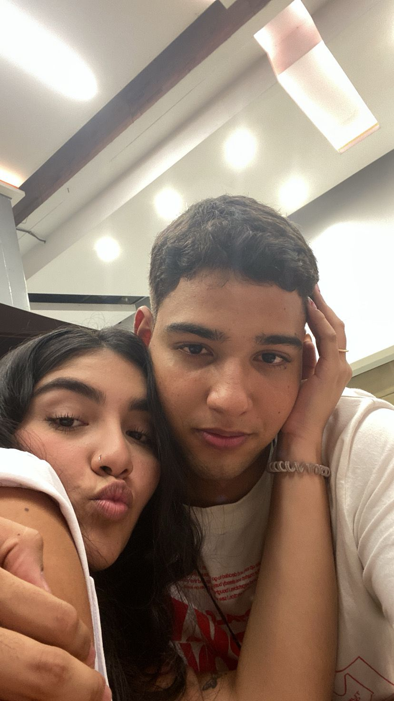

Nuestro primer San Valentín
Por primera vez estaba acompañado en una fecha que para mí era nueva; no tenía mucha idea de lo que se debía o no hacer. Algo era seguro, y no dejaba de rondar en mi mente: no quería estar en otra parte. Estaba un poco preocupado porque no quería echar a perder nada, pero todo eso se fue con el primer beso que nos dimos ese día. Todo iba de maravilla, todo fue tan lindo... un solo beso fue suficiente para calmar todo lo malo que sentía en mí. Nunca lo olvidaré. Hoy, en nuestro tercer San Valentín, aún estoy un poco nervioso, pero sigo con la certeza de que solo basta un beso para que todo se calme.